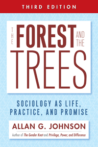

An updated exploration of sociology as a way of thinking
An updated exploration of sociology as a way of thinking


 An updated exploration of sociology as a way of thinking
An updated exploration of sociology as a way of thinking

|  |
The Forest and the TreesSociology as Life, Practice, and PromiseThird EditionAllan G. Johnsonpaper EAN: 978-1-43991-187-7 (ISBN: 1-4399-1187-8) |
"There is no better book to help college students understand the sociological mindset. In the tradition of Peter Berger�s Invitation to Sociology, Johnson speaks directly to students in clear language, using strong examples to clarify key sociological concepts, such as culture, structure, socialization, and privilege. For students who have not perceived their own privileged status, this serves as a challenging but affirming first step toward sociological self-awareness."
—Terence J. McGinn, The University of Michigan
If sociology could teach everyone just one thing, what would it be? The Forest and the Trees is one sociologist's response to the hypothetical-the core insight with the greatest potential to change how people see the world and themselves in relation to it.
This Third Edition features:
Updated key references, data, resources, and examples, from global warming, Barack Obama's election, and gay marriage to the Occupy Wall Street Movement
A glossary of terms
A new framework for the short essays in Chapter 6, exhibiting the power of sociology to dig beneath easy and popular understandings
An additional analysis of how men�s violence is made invisible even though most violence is perpetrated by men
Chapter 7�s new focus on sociology as a worldview with an analysis of the origins of white privilege
Excerpt available at www.temple.edu/tempress
"The Forest and the Trees integrates the topic of social inequality (both oppression and privilege) seamlessly into the narrative in a way that no other book I've considered does. I have so much respect for Johnson�s clear and compelling writing style, as well as his ability to explain and elaborate on concepts in a way that is easy for my students to understand."
—Betsy Lucal, Department of Sociology and Anthropology, Indiana University South Bend
"I love The Forest and the Trees. And, honestly, if there were not a new edition, I am not sure how I would teach my Introduction to Sociology course. My students often comment that it is the best course text they have ever read. I cannot sing the praises of The Forest and the Trees enough!."
—Marisol Clark-Ib��ez, Associate Professor of Sociology, California State University, San Marcos
"My most frequent margin notes in this book were �great� and �cool,� and I wrote them often. Not only does Johnson present the sociological perspective in a smoothly written, easily digestible form[;] he also makes surprising turns and gently leads the reader into some interesting implications of otherwise familiar arguments. . . . His examples shine. . . . Johnson�s impressive ability [is] to take the familiar and give it a twist, or to find intellectual surprises in the midst of conventional wisdom. . . .Repeatedly, Johnson explains tricky ideas simply. . . . He respects his readers, talking in terms they will understand while always pushing them intellectually to take one more step."
—Daniel F. Chambliss, Contemporary Sociology
"Johnson's prolegomenon to the study of sociology, written for . . . sociology students at all levels, presents a �core view� of sociology: individuals always participate in something larger than themselves�social systems; social life flows from this relationship between smaller and larger, between the forest and the trees. . . . Johnson's discussion is masterful."
—Choice
"If you are passionate in your belief in the promise of sociology to challenge how people think about social life and how they participate in it, you will find The Forest and the Trees an inspiring resource for your students. . . . I highly recommend this book as a very useful teaching aid for introductory sociology in the Berger and Mills traditions."
—B. Gerry Coulter,Canadian Review of Sociology and Anthropology
Acknowledgments
Introduction: Life, Practice, and Promise
1. The Forest, the Trees, and the One Thing
2. Culture: Symbols, Ideas, and the Stuff of Life
3. The Structures of Social Life
4. Population and Human Ecology: People, Space, and Place
5. Us, It, and Social Interaction
6. Things Are Not What They Seem
7. Sociology as Worldview: Where White Privilege Came From
Epilogue: Who Are We Really?
Notes
Glossary
Index
Allan G. Johnson is a nationally recognized sociologist, nonfiction author, novelist, and public speaker best known for his work on issues of privilege and oppression, especially in relation to gender and race. He is the author of numerous books, including The Gender Knot: Unraveling Our Patriarchal Legacy (Temple) and Privilege, Power, and Difference. His work has been translated into several languages and excerpted in numerous anthologies. Visit him online at www.agjohnson.us and follow his blog at http://agjohnson.wordpress.com.
Sociology
Gender Studies
Race and Ethnicity
© 2015 Temple University. All Rights Reserved. This page: http://www.temple.edu/tempress/titles/1366B_reg.html.